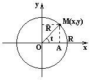

Окружность

Каноническое
уравнение окружности с центом в начале координат и радиусом R
,
Параметрическое
уравнение окружности с центом в начале координат и радиусом R
,
– угол, который составляет
радиус-вектор точки  с осью
с осью  .
.
с осью .